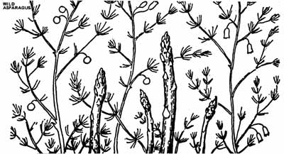
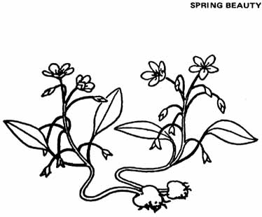
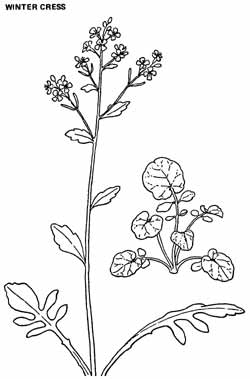

Copyright 01962 by Euel I Gibbons, Illus. by Margaret F. Schroeder. From the book
Stalking the Wild Asparagus by Euell Gibbons. Published by David McKay Co., Inc. Used
with permission of the publisher and McIntosh, McKee & Dodds, Inc.
Euell Gibbons' first book on foraged foods, Stalking the Wild Asparagus, was published in 1962 and I bought a copy shortly thereafter. How ironic. Here I was, a farm boy who'd grown up with great-aunts and great-uncles who regularly gathered wild strawberries and mushrooms and greens . . . and-except for my experiences with hickory nuts and black walnuts-I was learning to collect and eat volunteer edibles from a book! But that's the way it was. And I still owe Euell a debt of gratitude for opening my eyes to the magnificent quantities of food that Nature will provide us free of charge . . . if we'll only let her.-JS.
When I was about twelve years old we lived near the Rio Grande in New Mexico. At that age, I didn't mind school so badly when winter weather made it disagreeable to be outdoors, but, when the first warm days of spring arrived, I only existed through the five school days each week in order to really live on Saturdays. I would be off early every Saturday morning to the river, the woods or the surrounding hills to see what nature was doing about bringing the earth back to life, and to revel in all the changes that had taken place since the week before.
One such bright Saturday in spring, I was walking along the bank of an irrigation ditch, headed for a reservoir where I hoped to catch some fish. Happening to look down, I spied a clump of asparagus growing on the ditch bank, with half a dozen fat, little spears that were just the right size to be at their best. The idea of "reaping where I did not sow" has fascinated me all my life, I took out my pocketknife, cut the tender tips and dropped them into the pail in which I had intended to carry home any fish I might catch. Even while I was cutting this cluster, I saw another with several more perfect little sprouts. Alerted, I kept my eyes open and soon found another clump, and then another.
About this time I noticed that an old, dry, last-year's stalk stood above every clump of new asparagus tips. If I could learn to distinguish these old asparagus stalks from the surrounding dried debris, then I would be able to locate the hidden clusters of green spears from a distance. Despite my impatience to be off seeking more of these tender spears, I sat down on the ditch bank and for five minutes I did nothing but just look at one old dry asparagus stalk. It looked very much like the dead weeds and plants that surrounded it, and yet there were differences. The old asparagus plant stood about three feet high and had a central stem or "trunk" about a half inch in diameter which easily distinguished it from weeds with forking stems. Wind and winter weather had long since robbed the plant of its soft, threadlike foliage, but the horizontal branches were still there, though badly broken about the outer ends. These side branches, evenly spaced along the old stem, were larger near the ground and tapered to very small near the top, giving the whole plant a slender Christmas tree outline, although it was a very thin scraggly tree so late in the year. The color was different, too. Like all the rest of the dead plants it was straw-colored, but on the old asparagus the shade was lighter and the color somewhat brighter.
After getting the size, color and form thoroughly in my mind, I stood up and looked back along the ditch bank. Instantly, I saw a dozen old dead asparagus stalks that I had missed. I went back to where I had found the first clump and worked my way down the ditch again, and this time I really reaped a harvest. My pail was soon full, so I took off my undershirt, tied up the sleeves and neck opening, and filled it, too, full of fresh asparagus. I didn't bother to go fishing at all. Fresh, tender asparagus tips were far better food than the bony suckers I could catch in the reservoir.
During the next week we ate fresh asparagus every day. We had boiled and buttered asparagus, creamed asparagus, asparagus on toast and asparagus soup. I doubt that young people today can realize how good the first green vegetables of spring tasted in those days before quick freezing and fast transportation began furnishing us with fresh green vegetables all winter.
The next Saturday I was back out along the ditch bank gathering asparagus. Until school was out in June, I made a weekly visit to what I had come to think of as my asparagus patch. By this time, all the wild asparagus that had not been kept closely cut was waving its fernlike foliage in the breeze, but where I had taken each spear as soon as it had appeared, the perennial roots kept sending up more new shoots to replace those I had stolen. My family grew tired of asparagus, but they never complained. Only recently my mother told me that she was actually giving a large portion of the bounty I was bringing home to the neighbors secretly, for she did not want to dampen my enthusiasm or dull my enjoyment of the task.
Before another spring, my parents had moved to a high, dry plateau farther west, and I was a middle-aged man before I saw wild asparagus again. The next time I saw those familiar dead stalks that had beckoned for me to come and pick the green treasure at their bases was one spring when I was driving along a country road in Pennsylvania, shortly after moving to the Commonwealth where I now make my home. At first I wondered why those bright, straw-colored dead weeds by the roadside gave me such a feeling of nostalgia. Then the memory of those long-past spring days on the ditch bank came rolling back. I stopped the car and examined the nearest stalk. Sure enough, near its base the little green tips were just peeping through the ground. Although I was a stranger in the East, this was like a welcome home. I was back in wild asparagus country again.
Since then, each spring I go out along the field borders and byways and gather wild asparagus, not only enough for current use, but some to store in the freezer, so I can bring back the joyous spring days any time of the year merely by cooking a dish of wild asparagus. That five minutes I spent so long ago, concentrating on one dead asparagus plant, has led me to many pounds of this most delicious of early vegetables. The eye-training it gave me has lasted until now. Whenever I drive, in late winter or early spring, my eye automatically picks up the dead asparagus stalks by the roadside, and I make an almost unconscious mental note of the places where the green spears will be plentiful when warm weather arrives.
I suppose this wild vegetable is really no better than the cultivated kind, but, because of the memories it evokes, it always tastes better to me. It is exactly the same species as the cultivated varieties. Birds long ago scattered the seeds from domestic plants, and now, all over the eastern states and in irrigated sections of the West, wild asparagus grows in fence corners and hedgerows. The mature plant is familiar to everyone who takes any notice at all of wayside plants, for its lacy green foliage decorates the roadsides from early summer until the first freeze. A frond or two from this graceful plant will never fail to improve the appearance of a wildflower bouquet. In the fall, some plants are covered with bright red berries a quarterinch in diameter, each containing from one to six hard, black seeds, but the birds soon take care of these.
The edible tips and spears, in which we are chiefly interested, appear long before the asparagus puts on its summer finery, and they must be located by that drab, old, last-year's stalk. My neighbors often smile when they see me by the roadside with my asparagus knife and pail. They think it is much simpler to merely buy the asparagus one wants at the supermarket. But I have a secret they don't know about. When I am out along the hedgerows and waysides gathering wild asparagus, I am twelve years old again, and all the world is new and wonderful as the spring sun quickens the green' things into life after a winter's dormancy. Now do you know why I like wild asparagus?
One spring I helped an artist friend build a cabin near a trout stream in central Pennsylvania. He planned to spend much of each year in this retreat and was interested in raising and foraging as much of his food as possible, for, like all artists I know, he wasn't overloaded with money. As a place to raise vegetables, he chose a sunny little clearing near his cabin site that was literally carpeted with Spring Beauties when we first inspected it in April.
These pale-rose-colored flowers with five petals and five tiny golden stamens are familiar to nearly everyone who goes into the woods and fields seeking the first wild flowers of spring. They are borne on slender stems, seldom more than six inches high, that spring from inconspicuous plants that consist mainly of three to a dozen slender pointed leaves, four to five inches long and only about a half-inch wide. Although this is one of our best-known early wild flowers, few people seem to know that this insignificant little plant also bears an edible tuber.
I had collected a few of these Fairy Spuds before for experiments, but ordinarily I couldn't bring myself to destroy such a beautiful wild flower for the sake of the small tuber from which it grows. Now, since these flowers were to be destroyed for the sake of a kitchen garden anyway, I could dig with an easy conscience. Each evening after we had quit work on the cabin for the day, I would repair to the garden plot with a hand weeder and a pail, and in about an hour I dug all the tubers the two of us could eat. My friend would rake over the area where I had been digging and plant a few vegetable seeds. That is the only garden I ever knew to be completely spaded up with a hand weeder.
Spring beauty tubers are found two to three inches under the plant and look like little potatoes. They are from one-half to two inches in diameter, the larger ones tending to be of very irregular shape. This uneven surface usually presents a tough cleaning job, but we got around that by putting them in a covered wire basket, really an old corn popper, and setting them under a little waterfall in the trout stream. Then we could go fishing while our supper was being washed.
The simplest way to cook fairy spuds is to boil them 10 or 15 minutes, depending on size, in salted water. Drain off the water and, as soon as the tubers are cool enough to handle just peel off the skins and pop them into your mouth. My friend described the flavor and texture as "exactly like potatoes, only much better." To me, they have the sweetness and flavor of boiled chestnuts, although they are softer and smoother in texture.
We ate them every day, sometimes twice a day, for several weeks without growing tired of them. We tried them fried, mashed, in salads and cooked with peas, like new potatoes. All these ways were completely successful, but, as regular fare, we preferred them just boiled "in the jackets." My friend grew so fond of this food that he was afraid he would experience withdrawal symptoms when the supply was exhausted.
I am glad to have had this spring beauty orgy, but I hope this account doesn't cause any of the regular displays of this herald of spring to be destroyed. The spring beauty reproduces in two ways. Besides making seed, new little tubers bud off from the older ones. In many places, where this pretty spring flower is very abundant, the careful experimenter can collect fairy spuds without harming the future floral displays if he takes only the large tubers and replants the smaller ones.
Let's not let our greediness for this food destroy or diminish this attractive plant. The tubers are good food for the body, but, after a long winter, the pale-rose flowers in early spring are food for the soul. "Man does not live by bread alone."
(Barbarea vulgaris and Barbarea verna)
Where I live in suburban Philadelphia, the first sign of spring is not the returning wild geese winging high, nor the robins on the lawn. These harbingers are always preceded by the Italians, swarming out from town to gather Winter Cress from fields and ditches.
You would think that the suburbanites would catch on to the fact that they are missing out on a good thing and learn something from this annual event. But they never do. They pay exorbitant prices for tasteless greenhouse produce and week-old vegetables from Florida or California, and never realize that they have driven their station wagons past tons of much better vegetables on the way to the supermarket. They feel smugly superior to the rummaging people they passed along the way.
Why? There's nothing smart about eating poor food and getting gypped in the bargain, when nature is offering much better fare for the taking. If I followed one of those buxom Italian women home, I'll bet I would get a much better dinner than I would if I had to eat the force grown, sprayed, processed, refrigerated, devitalized products for which the suburban housewife thought it smart to pay good money.
The suburban dweller seldom bothers to identify the plant which the immigrants are so eagerly collecting. Such knowledge is strictly for squares. He is satisfied to refer to it merely as "some weed the Italians eat." We have come to a poor pass when we think that allowing ourselves to be bilked because of our own ignorance contributes to our status. And still we think we have a mission to teach the rest of the world "the American way." Heaven forbid this kind of thinking. We do have some things to teach, but we also have many things to learn from other cultures. Unless we realize that cultural exchange is a two-way street, we shall fail, and much of the ancient and precious wisdom now residing in the simple peoples of the world will be lost.
Wow! Who would have thought that such a sermon could be dug out of an insignificant plant of the Mustard Family?
Barbarea was so named because it was formerly the only green plant that could be gathered and eaten on Saint Barbara's Day, which falls on the fourth day of December. The specific term vulgaris merely means the plant is common. Barbarea verna sounds like a contradiction of terms, for the Barbarea refers to early winter and the verna refers to spring, but this term very nicely indicates the season over which the plant is good for food.
Barbarea has many common names, being known as Winter Cress, Spring Cress, Upland Cress and Yellow Rocket. Many country people refer to it merely as Mustard Greens, and it is a member of the Cruciferae, or Mustard Family, but I dislike this term, because it tends to confuse this plant with the Brassicas.
Barbarea verna is often cultivated from New York southward, appearing on the market as Scurvy Grass or Bell Isle Cress. The canny truck farmer sows the seed in the fall and reaps a crop when his land would be useless for any other purpose.
B. vulgaris is found in low rich ground, often near streams and ditches, while B. verna finds its favorite home in fallow fields and cultivated lands. In rich garden soil, I have found the two species growing together. They look much alike, have the same season, and both species are equally good for food, so they can be gathered indiscriminately.
These perennial members of the Mustard Family form thick clumps of smooth green leaves, growing six to eight inches long and springing directly from the crown of the perennial root. They have an extraordinary ability to grow vigorously during any warm spell in winter and from them the forager can often gather fresh salad material or boiling greens in midwinter if the ground is free of snow. However, it is in late February and early March that winter cress becomes best and most abundant. It forms dense, bright green clusters before any other green thing shows.
These leaves have from two to eight pairs of small lateral lobes along the stem and a much larger terminal lobe. The lobes have entire margins and smooth, shiny surfaces without the hairiness of the mustards. In April, the plant puts up a seed stalk which eventually reaches from one to two feet high and bears many bright yellow flowers, about a quarter inch across and evenly spaced along the stem. These flowers, like all members of the Mustard Family, have four petals and six stamens.
To be edible, the leaves of winter cress must be gathered early, while the weather is still cold. Those who complain of the bitterness of this plant are usually those who gathered it too late in the season. When gathered early enough, winter cress is no more bitter than the best leaf lettuce, and far less so than endive or escarole. As soon as the frosty nights are past, this plant becomes too bitter to eat. Fortunately, by this time, one can select from a number of other wild salads and potherbs.
I have made an excellent wild salad in early March by combining equal parts of the blanched center leaves of winter cress, new tips of water cress and the crisp, underground shoots of day lily, with a very few wild garlic tops. These were all chopped fine and served with a bleu cheese dressing.
If you have plenty of winter cress growing near your home, as I have, you can give nature a hand to produce some real luxury-type salad material. Tie each large cluster into a tight bundle right where it's growing, then invert a flowerpot over each bunch. Stop the hole in the bottom with a bit of sod to exclude all light, and in-ten days or two weeks the cress will be beautifully blanched. Excluding the light keeps the bitter principle from developing, lightens the color, gives a crisp texture and a delicious flavor. This blanched winter cress can be mixed with other salad materials or eaten alone.
There is no need to blanch the leaves if they are to be used as boiling greens. In winter or very early spring, these leaves can be cooked and seasoned just as you would prepare spinach. A little later, when the bitter principle starts to develop, winter cress will still make good greens if it is boiled in two waters, throwing the first water away. When the bloom stalk appears, the leaves become too bitter to eat, but winter cress compensates by immediately producing edible heads of bloom buds. This is another of the wild broccolis and one of the best.
The buds first appear in a compact cluster, then the bloom stalk pushes upward, still bearing a cluster of buds at the top, and leaving opened blossoms along the growing stem. The bud clusters can be gathered for food from the time they first appear until the last buds open, so the season extends over several weeks.
This wild broccoli is neither tedious to pick nor difficult to prepare just pull the whole bud clusters and never mind if you get a few opened blossoms; they're good too. Place the dry clusters in a kettle and pour boiling water over them. Let stand about 1/2 minute, then drain. Cover the buds with fresh boiling water, place" on heat and boil for about 3 minutes. Drain again, season with salt and butter, then serve. The whole cooking operation takes only about 5 minutes.
Next spring, let's join that cavalcade of Italians when they head for the country and enjoy some delicious and healthful food plucked at no cost from the fields and roadsides. There is plenty of winter cress for us all.
|
|
 |
 |
|
 |
|
|